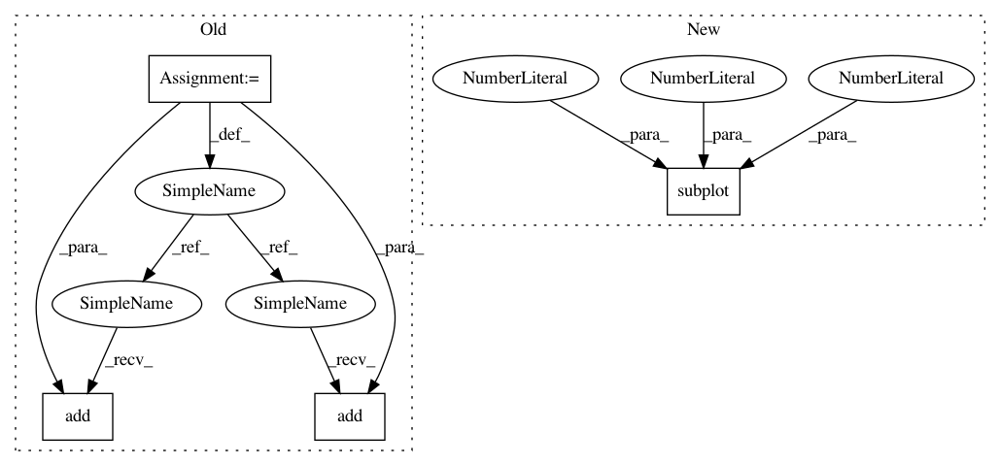

6933f80091d1a2f7ef2310a6b29988bf10443658,Lib/sandbox/rbf/tests/example1.py,,,#,7
Before Change
// plot the result
from enthought.tvtk.tools import mlab
f=mlab.figure(browser=False)
su=mlab.Surf(XI,YI,ZI,ZI,scalar_visibility=True)
f.add(su)
su.lut_type="blue-red"
f.objects[0].axis.z_label="value"
pp = mlab.Spheres(s.c_[x.flatten(), y.flatten(), z.flatten()],radius=0.03)
f.add(pp)
After Change
// plot the result
n = p.normalize(-2., 2.)
p.subplot(1,1,1)
p.pcolor(XI,YI,ZI,cmap=p.cm.jet)
p.scatter(x,y,100,z,cmap=p.cm.jet)
p.title("RBF interpolation - multiquadrics")
p.xlim(-2,2)
In pattern: SUPERPATTERN
Frequency: 3
Non-data size: 4
Instances
Project Name: scipy/scipy
Commit Name: 6933f80091d1a2f7ef2310a6b29988bf10443658
Time: 2007-06-10
Author: jtravs@localhost
File Name: Lib/sandbox/rbf/tests/example1.py
Class Name:
Method Name:
Project Name: nipy/dipy
Commit Name: 6c524d66dcd30d98a0f0c991252a3be644fa58ef
Time: 2013-09-11
Author: stjeansam@gmail.com
File Name: doc/examples/compute_SNR_in_corpus_callosum.py
Class Name:
Method Name:
Project Name: nipy/dipy
Commit Name: cf7d0bdc4133ea3248e054fa93aa2b5a6f8f2fca
Time: 2013-09-11
Author: stjeansam@gmail.com
File Name: doc/examples/compute_SNR_in_corpus_callosum.py
Class Name:
Method Name:
Project Name: scipy/scipy
Commit Name: 6933f80091d1a2f7ef2310a6b29988bf10443658
Time: 2007-06-10
Author: jtravs@localhost
File Name: Lib/sandbox/rbf/tests/example1.py
Class Name:
Method Name: